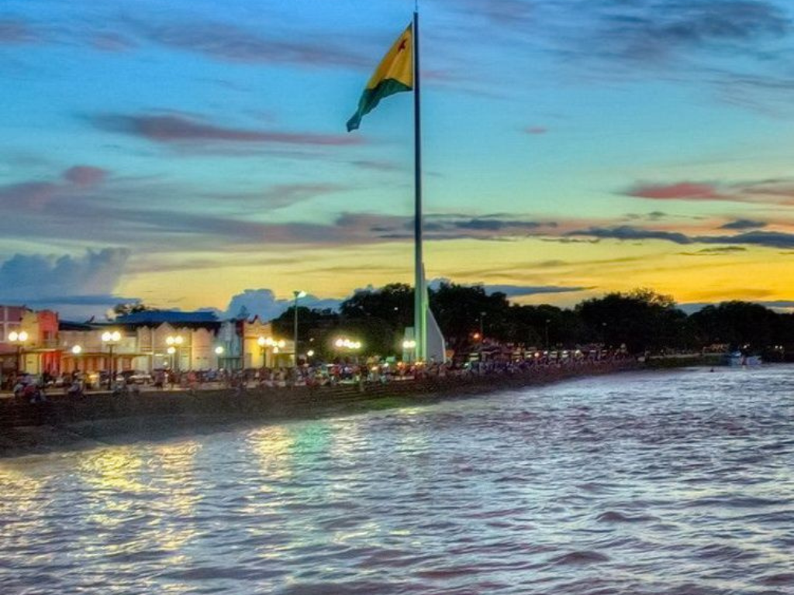

O Acre é o estado mais ocidental do Brasil, localizado na Amazônia Ocidental, na Região Norte. Famoso por sua rica biodiversidade e pelos seringais que impulsionaram a economia no passado, o estado foi anexado ao território brasileiro em 1903 após a Revolução Acriana e o Tratado de Petrópolis. Sua capital é Rio Branco.
